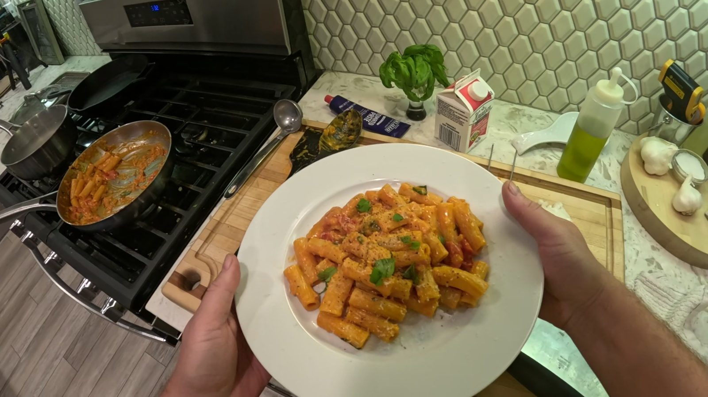

Rigatoni No Vodka

Rigatoni No Vodka is a rich, creamy tomato pasta that delivers everything I want from a comfort-food pasta dish. Over time I've found a balance of tomato, cream, cheese, and pasta that produces exactly the flavor and texture I'm looking for. Despite the name, I've made this dish many times without vodka and have always been happy with the results.
Prep Time
10 minutes
Cook Time
25 minutes
Total Time
35 minutes
Servings
2
Watch the Video
Ingredients
- 8 oz (225 g) rigatoni
- 1 tablespoon extra virgin olive oil
- 1 tablespoon unsalted butter
- 2 cloves garlic, thinly sliced
- 2 tablespoons tomato paste
- 1 cup (240 ml) crushed tomatoes
- ½ cup (120 ml) heavy cream
- ½ cup (45 g) finely grated Parmigiano Reggiano, plus more for serving
- Kosher salt
- Freshly ground black pepper
- Fresh basil, for serving (optional)
- Reserved pasta water, as needed
Instructions
- Bring a large pot of well-salted water to a boil and cook the rigatoni until just shy of al dente. Reserve at least 1 cup of pasta water.
- Heat the olive oil and butter in a large skillet over medium heat. Add the garlic and cook until fragrant, about 1 minute.
- Stir in the tomato paste and cook until it darkens slightly, 1–2 minutes.
- Add the crushed tomatoes and simmer for 8–10 minutes.
- Stir in the cream and let the sauce come back to a gentle simmer.
- Add the drained pasta and a splash of pasta water. Toss until the sauce coats the rigatoni.
- Remove from the heat and toss in the Parmigiano Reggiano, adding more pasta water as needed until the sauce is glossy.
- Season with salt and pepper. Serve with more cheese and basil if you like.
Chef’s Notes
Whether the vodka makes a noticeable difference is still up for debate, but this version doesn't feel like it's missing anything. The tomato paste needs a minute in the pan so the sauce tastes cooked, not raw. Finish the pasta in the sauce so the cream and cheese actually cling to the rigatoni.
Equipment Used
- Large pot
- Large skillet
- Tongs or wooden spoon